Falling Eclipse
Type: Product. 3D Modelling, Graphics, Fabrication
Team: Angela Lee, Min Kang, Jason Yang
Tools: Illustrator, Maya
Date: May to August 2022
Project Description
In the Materials in Design course, our team had to create a speaker and consider the material selection based on durability, environmental effects, tactile properties, manufacturing processes, compatibility, and effects of particular forms of use. We decided to design our speaker for users who have insomnia and limited home space. Thus, we created Falling Eclipse, a speaker that can place on a flat surface as well as hang from the ceiling, while maintaining a minimal and clean design.

Final model of Falling Eclipse.
Design Process
Before we started brainstorming and sketching our model, we first selected two primary materials for our speaker, which are wood and fabric, and then we research one existing speaker that is already on the market per each material to analyze its aesthetics, functionality, and materiality.
The material poster that we researched two existing products of our primary materials, fabric, and wood with an analysis of those products.
After we had done deep research, we had a better understanding of the materials. We decided to apply the elastic characteristics of the fabric, and break the mindset that wood should be always flat. Thus, each of us created 3 sketches to explore different possibilities of the speaker and decided on the persona.
Each of us drew 3 sketches, in total 12 sketches.
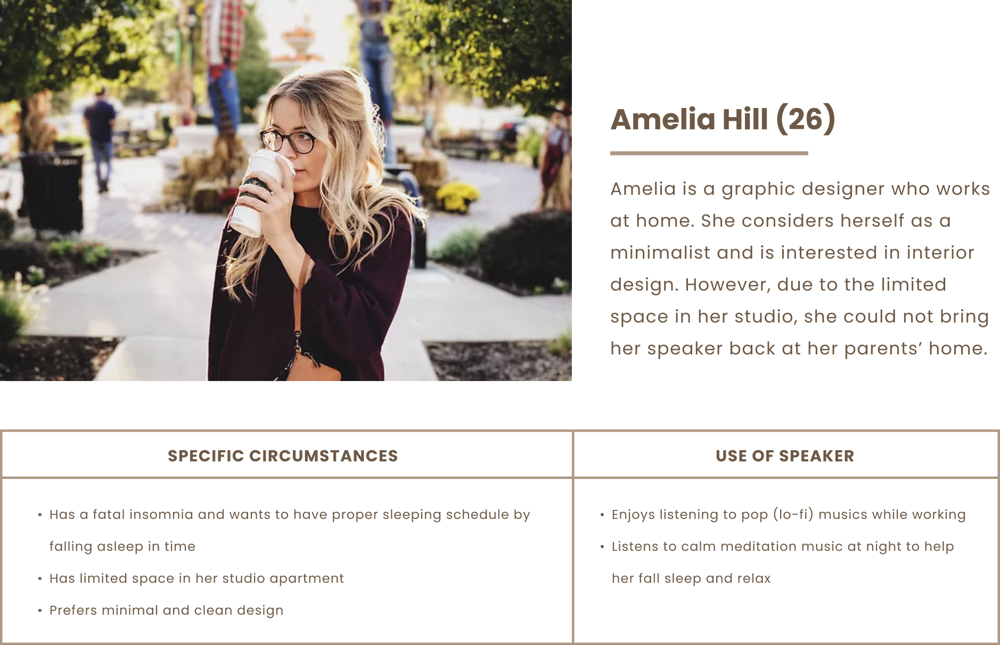With the materials in mind, we created a persona and took into consideration integrating frustration, goal, and occupation data to develop a genuine end-user.
Combining our sketches, we created a new concept by using different sizes of circular wooden disks with fabric in the middle for the sound to transmit through. After that, we created a low-fidelity prototype using styrene, cardboard, and wool.
Our first concept of the speaker.
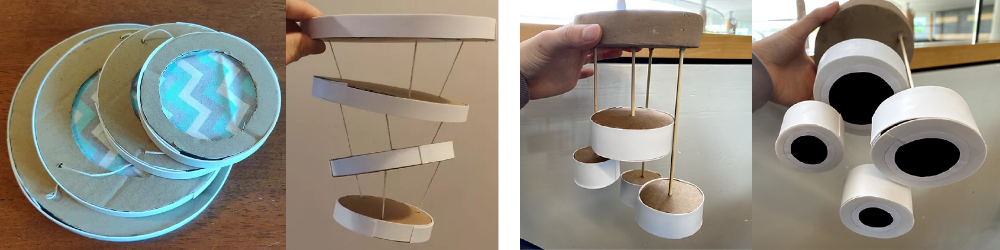We created two low-fidelity prototypes based on the concept. However, we realized the our initial concept (on the left side) is very unstable. Therefore, we added a base and changed the strings to wooden dowels.
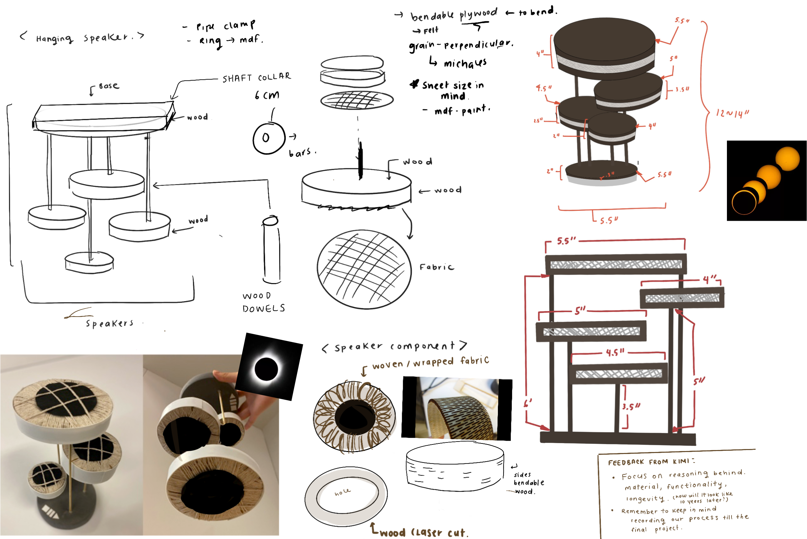The detailed explanation of the fianlized concept.
After receiving feedback from the professor and peers, we made some changes on the prototype. To create the actual product, we first build a 1-to-1 scale model by using cardboard, wooden dowel, wool, and cotton as a demo to test the sizes of each component and the dimension of the overall product.

The orthographic views, exploded view and isometric view of the speaker.
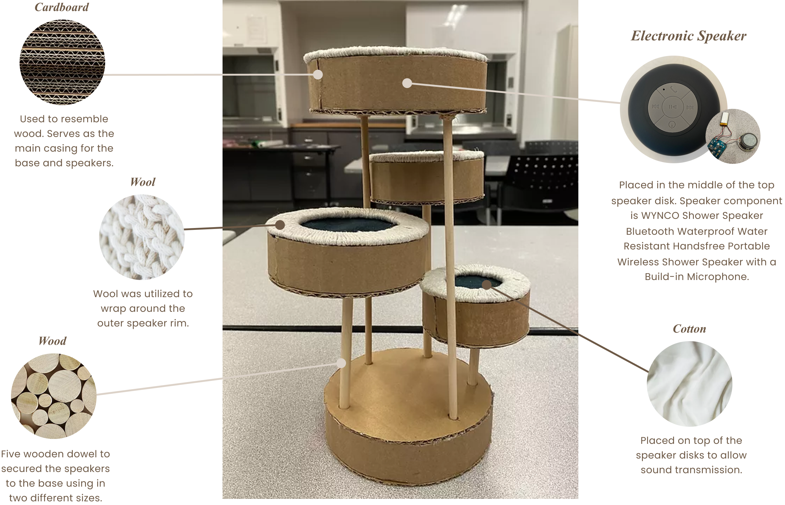The demo product with the material used in it.
After that, we finalized our material choice and used laser cutting for the wooden parts.
We created laser cut files using Illustrator and experimented with the bendable wood pattern.
For the fabric part, we used scissors to cut the black nylon into pieces for the wooden disc cover.
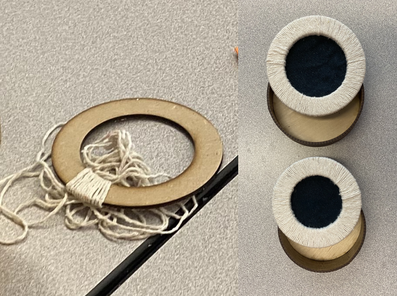We used wool yarn to wrap the wooden rim and glued down the end of the string as well as the black nylon that had been cut.
Used metal shaft collars to tightly hold the wooden dowels and withstand the weight of the wooden discs inside the base.
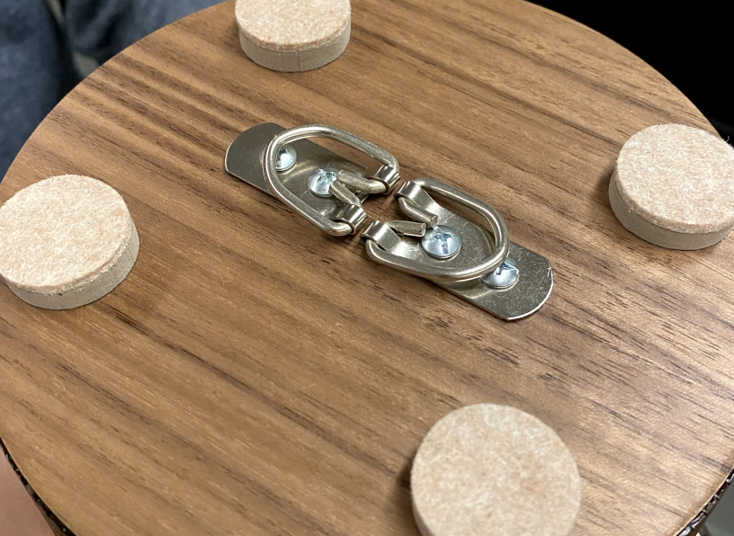Used two D-ring hangers and four stickers felt pads on top of the speakers to allow users to hang the speaker on the ceiling.
Cut the proper length of the wooden dowels and used sandpaper to remove any wood residue.
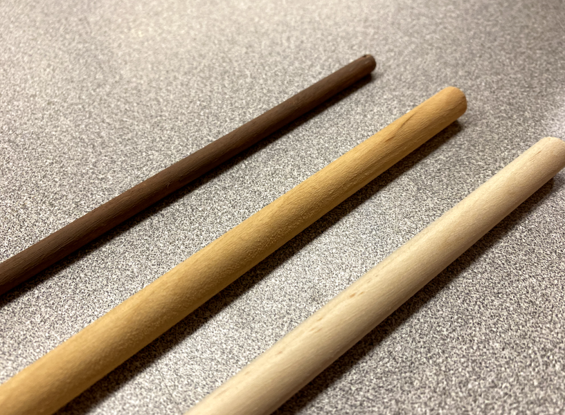As we wanted a dark brown finish for the wooden dowels, we experimented with tinting them using black tea. However, we realized the tinting method makes the shade of the wooden dowels uneven and it didn’t meet the darkness we want.
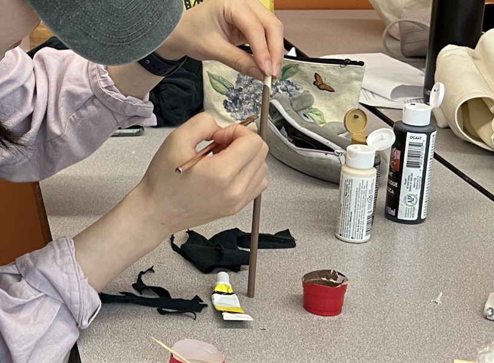At last, we painted them using dark brown acrylic.
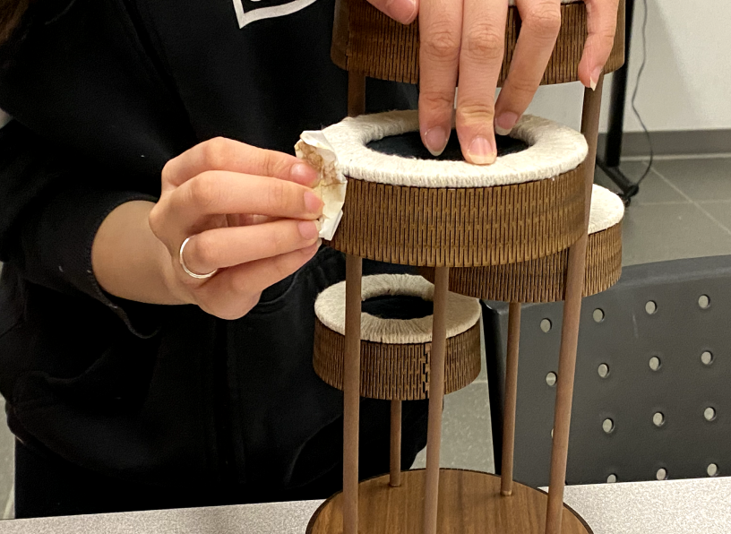Used alcohol wipes to remove the sticky residue from the laser cutting process and cleaned up around the areas that had high laser cut details.
Challenges
One biggest challenge of this project is dealing with the wooden part. As we wanted to use wood to surround the wooden disc, we tried different variations of bendable patterns using laser cutting. For our first iteration, the gap between the lines is too far apart so the wood immediately breaks when we try to bend it. Then, we modified our design pattern by making the lines closer and we finally can bend them. However, the laser cut left a burnt mark on the wood which will affect the aesthetics. Therefore, applying the knowledge from my previous coop, I applied masking tape on the wood part that we need to laser cut to prevent the burnt mark, but it left a sticky residue after removing the tape. Lastly, we used alcohol wipes to remove the residue.
Right side were the first trial of the bendable wood pattern. We realized the gap between the lines were too far away so it broke once we bend the wood. We modified our files and at last the wood can be bended as a circle as shown on the left side.
Reflection
Throughout this project, I understand that fabrication is a time-consuming task and it is very hard to create a perfect model based on the digital model. For example, we first experimented tinting the wooden dowels with black tea but it turned out uneven shade and still too light compared to our expectations even though we tinted them for 2 days. Although we used acrylic paint for the wooden dowels lastly, I think it is a good practice to try tinting to wood and explore how they will affect the outcome.
First user flow of using our speaker.
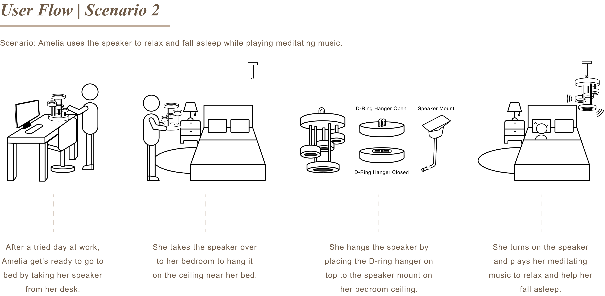Second user flow of using our speaker.
The 3D model of our speaker along with the materials applied to the product (top isometric view).
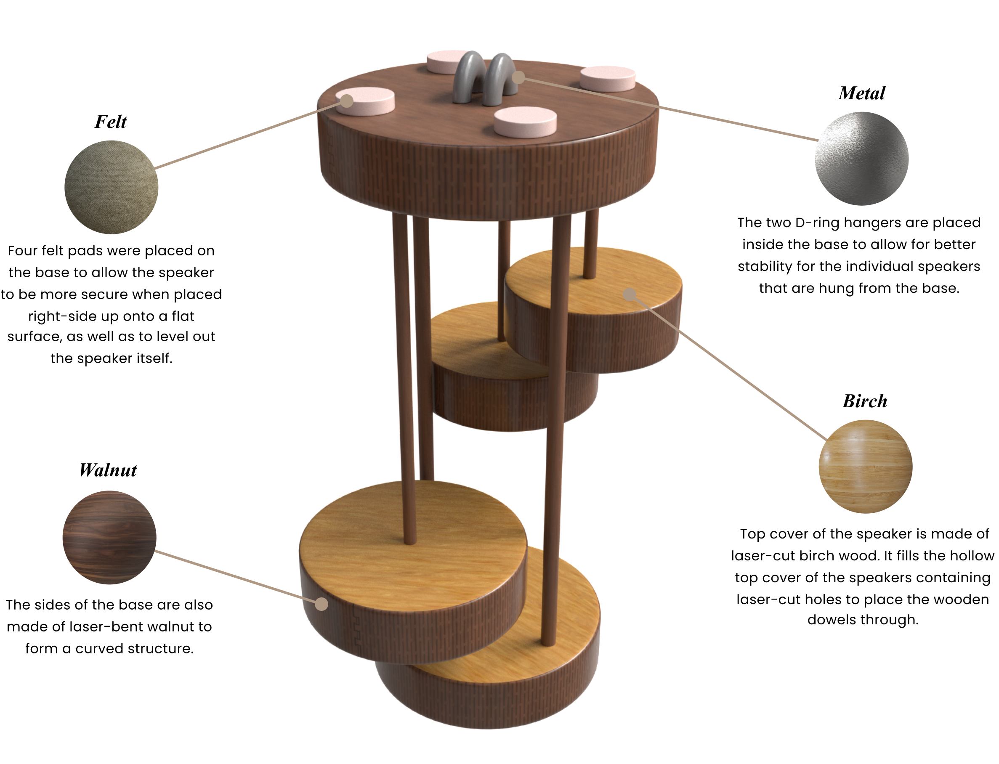The 3D model of our speaker along with the materials applied to the product (bottom isometric view).